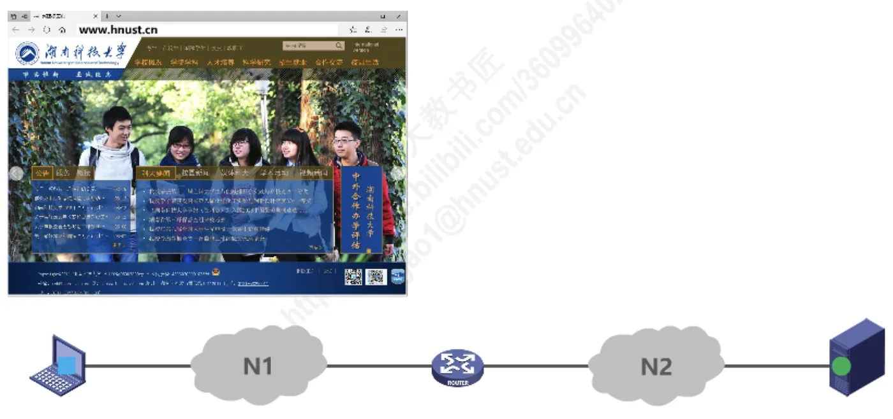
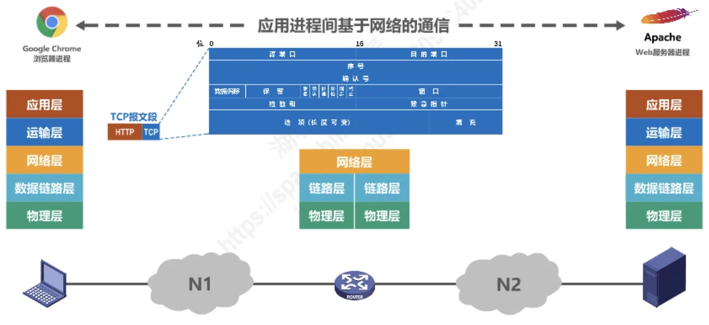

计算机通信与网络 · 第 1 章 概述
1.6 计算机网络体系结构（3）—分层思想举例
上一节我们逐层提出了五层各自要解决的问题，但那还是「纸上谈兵」。本节用一个最日常的例子把这五层真正串起来：用浏览器访问一个网站时，数据在发送方怎样一层层被加上首部封装起来，到了接收方又怎样一层层被剥掉还原，最终交到服务器进程手里。看完这个过程，「分层」和「协议」就不再是抽象的名词了。
1. 场景：从浏览器到 Web 服务器
假设用户想访问湖南科技大学的主页。他在浏览器地址栏里输入网址 www.hnust.cn，于是：
- 源主机上运行着浏览器进程（例子中是 Google Chrome）；
- 目的主机上运行着 Web 服务器进程（例子中是 Apache），它监听在 IP 地址
192.168.0.2上； - 两台主机之间由网络设备（交换机、路由器）连接起来。
这两个进程之间的通信，就是我们常说的「应用进程间基于网络的通信」。下面重点看源主机的发送过程。

2. 发送方：自顶向下的层层封装
浏览器进程产生了数据，但它并不能直接把数据「扔」到网上 —— 它只能把数据交给紧挨着自己的下一层。数据于是一路向下传递，每经过一层就被加上该层的控制信息，这个过程称为封装。
（1）应用层：产生 HTTP 请求报文
浏览器进程按照 HTTP 协议构造出一个 HTTP 请求报文，请求行与首部大致如下：
GET / HTTP/1.1
Accept-Language: cn-us
Accept: */*
Connection: close
Host: 192.168.0.2这个报文就是应用层的数据。它表达了「我要取根路径下的资源，我接受简体中文，请用短连接，服务端的地址是 192.168.0.2」。构造完成后，进程把报文交给运输层。
（2）运输层：加上 TCP 首部，成为 TCP 报文段
运输层给 HTTP 报文加上一个 TCP 首部，里面包含源端口、目的端口、序号、确认号、窗口、紧急指针、选项等字段。加上首部之后的数据单元称为 TCP 报文段。
端口的用处正在这里：数据到达目的主机后，主机要靠目的端口号判断应该把数据交给哪一个进程 —— 这正是上一节所说的「解决进程之间基于网络的通信问题」。

（3）网络层：加上 IP 首部，成为 IP 数据报
网络层再给 TCP 报文段加上一个 IP 首部，其中包含版本、首部长度、区分服务、标识、标志、生存时间、协议、总长度、片偏移、首部检验和、源地址、目的地址以及可变的可选字段。加上首部之后的数据单元称为 IP 数据报。
源地址和目的地址是这一层的关键：有了它们，路由器才能在多个网络之间为分组选择路径 —— 这就是「解决分组在多个网络上传输（路由）的问题」。
（4）数据链路层：加上帧首部和尾部，成为帧
数据链路层继续给 IP 数据报加上帧首部和帧尾部：首部中包含目的地址、源地址、类型等字段，尾部是帧检验序列 FCS，用于差错检测。加上首尾部之后的数据单元称为帧。这一层的地址解决的是「同一个网络（或一段链路）内如何标识各主机」的问题。
随后，帧被转换成比特流，并在前面加上前导码，再交给物理层。
（5）物理层：把比特流变成信号发送
物理层不再添加任何控制信息，它只负责把这一串比特变成适合在传输媒体上传输的信号发送出去 —— 这正是「解决使用何种信号来传输比特的问题」。
把这五步连起来看就是：
HTTP 报文 →（＋TCP 首部）→ TCP 报文段 →（＋IP 首部）→ IP 数据报 →（＋帧首部、帧尾部）→ 帧 →（转换为比特流＋前导码）→ 信号
3. 接收方：自底向上的层层解封装
信号沿传输媒体到达目的主机后，发生的事情正好相反：
- 物理层把收到的信号还原成比特流，交给数据链路层；
- 数据链路层从比特流中识别出帧，用帧尾部检验有无差错，剥去帧首部和帧尾部，把 IP 数据报交给网络层；
- 网络层剥去 IP 首部，把 TCP 报文段交给运输层；
- 运输层剥去 TCP 首部，根据目的端口把 HTTP 请求报文交给对应的进程；
- 应用层的 Web 服务器进程（Apache）得到 HTTP 请求报文，按协议解析并处理这个请求。
服务器处理完请求后，会把响应数据沿同样的路径封装后发回源主机，源主机再逐层解封装，最终由浏览器进程把网页显示出来。
4. 这个例子说明了什么
回头再看这个过程，有几点值得记住：
- 分层是真实存在的分工：应用层只管应用本身，运输层只管进程到进程，网络层只管路由，数据链路层只管一段链路，物理层只管信号。每一层都不必操心其他层的事；
- 数据是「层层封装、层层解封装」的：数据从上往下走时每层加一个首部，从下往上走时每层剥掉一个首部。首部就是这一层的「工作说明书」；
- 对等层之间的通信是逻辑上的：浏览器进程与服务器进程看起来是在直接对话（应用层与应用层对话），但真正在物理介质上跑的是最底层的信号。上一层把下一层提供的服务当作「传输通道」来用；
- 层次与数据单元一一对应：应用层处理报文，运输层处理 TCP 报文段（或 UDP 用户数据报），网络层处理 IP 数据报（分组），数据链路层处理帧，物理层处理比特。
下一节就把这些名字正式定义下来：实体、协议、服务、服务访问点，以及「协议是水平的、服务是垂直的」这一对关键区别。
本节小结
- 用浏览器访问网站是理解分层的典型例子：源主机上的浏览器进程与目的主机上的 Web 服务器进程交换数据，中间经过交换机与路由器；
- 发送方自顶向下封装：应用层构造 HTTP 请求报文 → 运输层加 TCP 首部（含源端口、目的端口等）成为 TCP 报文段 → 网络层加 IP 首部（含源地址、目的地址等）成为 IP 数据报 → 数据链路层加帧首部和帧尾部（含帧检验序列 FCS）成为帧 → 物理层把比特流变成信号发送；
- 接收方自底向上解封装：物理层还原比特流、数据链路层验错并剥去帧首尾部、网络层剥去 IP 首部、运输层按目的端口剥去 TCP 首部，最后把 HTTP 请求报文交给 Web 服务器进程；
- 各层的处理单元不同：报文（应用层）、TCP 报文段（运输层）、IP 数据报（网络层）、帧（数据链路层）、比特（物理层）；
- 分层的意义在于各层各司其职、只依赖下一层提供的服务，对等层之间的通信是逻辑上的直接通信，实际数据要靠逐层封装与解封装来传递。